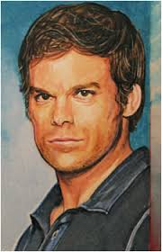

About Me
My name is Dexter Morgan and I am a web designer and developer. I enjoy creating websites that are simple, modern and easy to use.
I became interested in web development because I enjoy technology and being creative. I like taking an idea and turning it into a working website.
I have experience using HTML and CSS and I am always working on improving my web development skills.
My Skills
HTML5
Creating structured and organised web pages.
CSS3
Creating layouts, colours, fonts and page designs.
Web Design
Creating simple and attractive website designs.
Responsive Design
Making websites work on different screen sizes.
My Experience
I have worked on different school and personal projects. These projects have helped me improve my HTML, CSS and website design skills.
I enjoy learning new things and improving my websites with each project I complete.